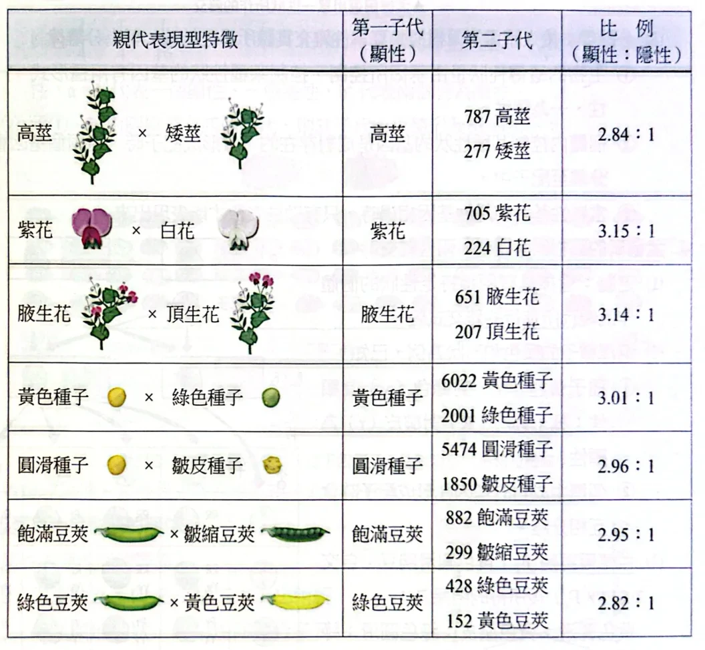
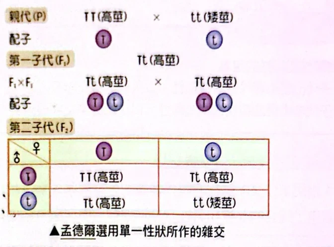
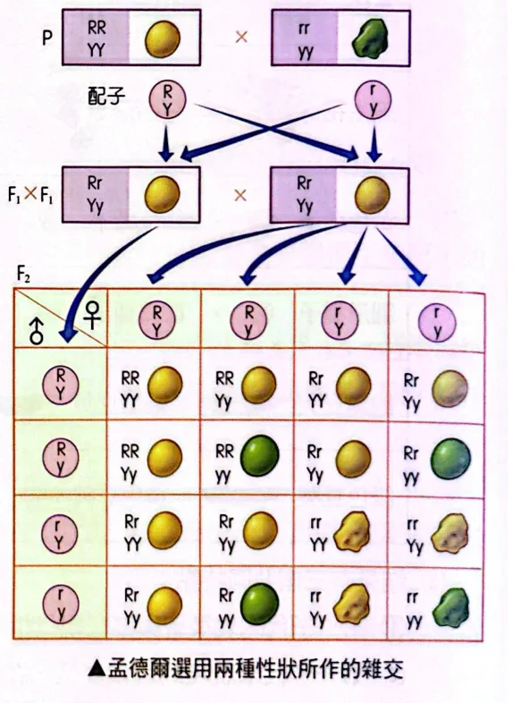
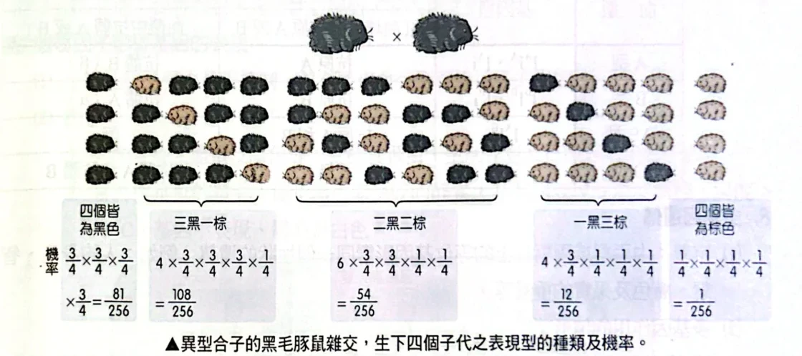

先分清楚：看見的性狀，不等於裡面的基因型
兩株豌豆都是高莖，為什麼自交以後，一株的後代全是高莖，另一株卻會出現矮莖？要回答這個問題，先把表現型和基因型分開。
本節先用一個單基因模型：T 代表高莖等位基因，t 代表矮莖等位基因，而且 T 對 t 為完全顯性。因此，TT 和 Tt 都是高莖，只有 tt 是矮莖。
| 名詞 | 在問什麼？ | 豌豆的例子 |
|---|
| 性狀／表徵 | 研究哪一項特徵／這項特徵的不同形式 | 莖的高矮／高莖、矮莖 |
| 表現型 | 實際觀察到的特徵 | 高莖或矮莖 |
| 基因型 | 這個基因座的等位基因組合 | TT、Tt、tt |
| 等位基因 | 同一基因座的不同版本 | T 與 t |
| 同型合子 | 兩份等位基因相同 | TT 或 tt |
| 異型合子 | 兩份等位基因不同 | Tt |
從基因型通常可以推表現型；反過來卻不一定。看見矮莖，可判斷為 tt；看見高莖，只能先寫成 T_，底線表示另一份等位基因尚未確定。
豌豆高莖 T 對矮莖 t 為完全顯性，下列何者錯誤？
TT 個體在這個基因座只形成帶 T 的配子。Tt 個體可形成帶 T 或帶 t 的配子。TT 與 Tt 的表現型相同。- 只要觀察到高莖，就能確定基因型是
Tt。
看答案與詳解收起
答D
解先將「看見什麼」與「帶有什麼」分開：
- (A) 正確：兩份都是
T，分開後仍只有 T 這一種。 - (B) 正確：一對
T／t 分離，正常分離下兩種配子各半。 - (C) 正確：完全顯性時，兩者都為高莖。
- (D) 錯誤：高莖可能是
TT，也可能是 Tt，不能單靠外觀選定其中一種。
孟德爾先觀察到什麼？
孟德爾選擇具有相對表徵的豌豆做雜交，先從一次只追蹤一種性狀開始。親代記作 P；親代雜交產生第一子代 F₁，再由 F₁ 自交得到第二子代 F₂。
純系是指所研究的性狀經多代自交後仍穩定一致的品系。以純系高莖與純系矮莖為例，在本節模型下，親代可寫成 TT × tt。注意原講義表格的兩欄：F₁ 出現什麼表徵？F₂ 又出現什麼表徵？

孟德爾七組豌豆雜交實驗：F₁與F₂的觀察結果原講義PDF第87頁・印刷第89頁・點圖放大
- F₁ 全是高莖。親代有高、有矮，子代卻沒有出現介於兩者之間的中等高度。
- 矮莖在 F₂ 再度出現。矮莖的遺傳因子並沒有在 F₁ 消失，只是未表現出來。
- F₂ 的高莖：矮莖接近 3：1。原表的高莖 787 株、矮莖 277 株，約為 2.84：1；這是實驗計數，不是理論式算錯。
- 交換父本與母本，這些實驗的結果仍相同。就本節追蹤的豌豆性狀而言，不能把高莖或矮莖只歸因於父方或只歸因於母方。
分離律：一對等位基因，形成配子時分開
接下來要解釋：為什麼 F₁ 看不見的矮莖，到了 F₂ 又會出現？關鍵在形成配子這一步。
回到細胞分裂的概念：一般二倍體個體的同源染色體，在減數分裂第一階段分離。就本節追蹤的基因座而言，一對等位基因會分到不同配子，每個配子只帶其中一份。
| 親代基因型 | 可能形成的配子 | 每種配子的機率 |
|---|
TT | 只有 T | T：100% |
Tt | T、t | 各 1/2 |
tt | 只有 t | t：100% |
因此，TT × tt 時，親代分別只提供 T 與 t，F₁ 就全是 Tt。F₁ 自交時，兩方卻各有一半機會提供 t，於是 F₂ 又可能組成 tt。

高莖、矮莖的單性雜交：從親代到F₂原講義PDF第88頁・印刷第90頁・點圖放大
從配子組合，推到 1：2：1 與 3：1
以 F₁ 自交 Tt × Tt 為例。兩方各提供 T 或 t，機率都是 1/2。先把配子放在方格外，再把兩方各給的一份等位基因填進格內。
Tt × Tt；每一格的機率都是 1/2 × 1/2＝1/4| 母方＼父方 | T（1/2） | t（1/2） |
|---|
| T（1/2） | TT高莖 | Tt高莖 |
|---|
| t（1/2） | Tt高莖 | tt矮莖 |
|---|
第一步：先統計基因型
TT 占一格，Tt 占兩格，tt 占一格。因此：
基因型比：TT：Tt：tt＝1：2：1
第二步：再合併相同的表現型
在完全顯性的前提下，TT 與 Tt 都是高莖，把這三格加起來；矮莖只有 tt 那一格。
表現型比：高莖：矮莖＝3：1
一株 Tt 高莖豌豆自交，觀察其 200 株子代。假設完全顯性、各基因型存活機會相同：
- 子代的基因型比為何？
- 高莖：矮莖的理論比為何？預期有幾株矮莖？
- 若實際得到 46 株矮莖，是否僅憑這個數字就能否定分離律？
看答案與詳解收起
答TT：Tt：tt＝1：2：1；高莖：矮莖＝3：1；預期矮莖50株；不能僅憑46株就否定。
解Tt 形成兩種配子，各占 1/2。兩方組合得到 TT、Tt、Tt、tt，每格機率 1/4。- 依基因型統計為 1：2：1；依表現型合併
TT、Tt，成為 3：1。 - 矮莖機率 1/4，期望數為
200 × 1/4＝50。 - 50 是重複進行這類取樣時的期望，不是每一次實驗必須恰好得到的數量。實際46株可能只是抽樣波動；要評估是否明顯偏離模型，需進一步分析，不能只因不等於50就否定。
小結機率乘以子代總數得到的是期望數，不是固定配額。
試交：用子代，判斷未知親代
現在把問題反過來：一株高莖豌豆，究竟是 TT 還是 Tt？直接看外表分不出來，就讓它與隱性同型合子 tt 交配，這叫試交。
為什麼選 tt？因為它只提供 t，不會把未知親代給出的訊息遮住。子代是 Tt，代表未知親代給了 T；子代是 tt，代表未知親代給了 t。
| 未知高莖若為…… | 試交 | 子代的理論結果 |
|---|
TT | TT × tt | 全為 Tt，全是高莖 |
Tt | Tt × tt | Tt：tt＝1：1，高莖與矮莖各半 |
容易混淆的交配名稱
| 名稱 | 看的是什麼？ | 例子或用途 |
|---|
| 自交 | 同一個體的配子結合；豌豆可自花授粉 | Tt 個體自交，可用 Tt × Tt 分析 |
| 雜交 | 在本節比較具有不同表徵或基因型的親代 | TT × tt |
| 互交 | 交換兩種親代的父本、母本角色 | 高莖當母本與高莖當父本，分別比較後代 |
| 反交 | 子代與親代之一，或同親代基因型的個體交配 | F₁ × P |
| 試交 | 待測個體與隱性同型合子交配 | 判斷未知顯性個體的基因型 |
兩個不同個體都是 Tt，不會只因基因型相同就叫自交；反交也不一定是試交，要看交配對象是否為隱性同型合子。互交若有不同結果，需進一步檢查性聯或親本來源等可能因素。
有兩株未知基因型的高莖豌豆甲、乙，分別與矮莖 tt 試交。甲的子代有7株高莖、1株矮莖；乙目前觀察到8株，全部高莖。
哪些親代的基因型可以確定？請說明依據。依本節單基因模型作答，不考慮突變或親子辨識錯誤。
看答案與詳解收起
答甲可確定為Tt；乙仍可能是TT或Tt。
解先看甲出現的矮莖。矮莖一定是 tt：一份 t 來自已知的矮莖親代，另一份必須來自甲。甲本身又是高莖，所以甲是 Tt。
甲的7：1並不需要剛好等於理論1：1，才能證明它帶有 t；只要確實出現 tt 子代，就有傳出 t 的證據。
再看乙。TT × tt 會全高莖；但 Tt × tt 也可能因少量取樣而碰巧全高莖。因此目前尚不能排除 Tt。增加子代數有助於判斷，卻不能把「沒有看到」當作「絕不可能有」。
小結有隱性子代，可以追出隱性等位基因；少量子代全顯性，證據沒有同樣強。
兩對因子：先列配子，再談獨立分配
一對等位基因會分離，換成兩對時，還要多問一句：這一對怎麼分，會不會影響另一對？
沿用原圖的種子例子：R 對 r 為顯性，表現圓滑；Y 對 y 為顯性，表現黃色。先假設這兩個基因座獨立分配，且都符合完全顯性。
RrYy 為什麼有四種配子？
配子必須從 R／r 中取一份，也從 Y／y 中取一份。因此可能是 RY、Ry、rY、ry；在獨立分配下，各組合的機率都是 1/2 × 1/2＝1/4。
| 先選這一對 | 再選另一對 | 組成配子 | 機率 |
|---|
| R | Y | RY | 1/4 |
| R | y | Ry | 1/4 |
| r | Y | rY | 1/4 |
| r | y | ry | 1/4 |
配子不能寫成 Rr 或 Yy：那是從同一對拿了兩份，卻漏掉另一個基因座。

兩對因子雜交：四種配子與十六種受精組合原講義PDF第88頁・印刷第90頁・點圖放大
原講義的兩性雜交數據為：黃色圓滑315、黃色皺皮101、綠色圓滑108、綠色皺皮32，約為9：3：3：1。下面用兩個基因座各自的機率，說明這個預期比例如何得到。
9：3：3：1 可以分開算，不必硬背十六格
對 RrYy × RrYy，先分別分析兩個基因座：圓滑的機率為 3/4、皺皮為 1/4；黃色為 3/4、綠色為 1/4。因為兩性狀在此模型中獨立，可將對應機率相乘。
| 子代表現型 | 需要同時符合 | 機率 |
|---|
| 黃色圓滑 | 黃色且圓滑 | 3/4 × 3/4＝9/16 |
| 黃色皺皮 | 黃色且皺皮 | 3/4 × 1/4＝3/16 |
| 綠色圓滑 | 綠色且圓滑 | 1/4 × 3/4＝3/16 |
| 綠色皺皮 | 綠色且皺皮 | 1/4 × 1/4＝1/16 |
種子圓滑 R 對皺皮 r、黃色 Y 對綠色 y 都為完全顯性，兩個基因座獨立分配。以 RrYy × Rryy 交配：
- 兩方各可形成哪些配子？
- 子代為「黃色皺皮」的機率為何？
看答案與詳解收起
答RrYy：RY、Ry、rY、ry，各1/4；Rryy：Ry、ry，各1/2。黃色皺皮機率1/8。
解- 第一個親代在兩個基因座都為異型合子，四種配子各1/4；第二個親代在
Y／y 這一對只有 y，所以只有 Ry、ry。 - 先只看形狀：
Rr × Rr，子代皺皮 rr 的機率是1/4。 - 再只看顏色：
Yy × yy，子代黃色 Yy 的機率是1/2。 - 黃色且皺皮，需要兩個條件同時成立。獨立分配下可相乘：
1/2 × 1/4＝1/8。
這題的第二親代不是 RrYy，不能直接從9：3：3：1中拿出3/16作答。
機率題：先把「且、或、已知」翻成情況
遺傳規則告訴我們一次交配的機率；題目接著可能追問兩個子代、四個子代，或只在某一群子代中計算。先說清楚要算哪一些情況，再寫算式。
| 題目語意 | 先做什麼？ | 本節例子 |
|---|
| 同時符合兩件事 | 確認能否視為獨立，再相乘 | 黃色且皺皮 |
| 符合甲或符合乙 | 若兩種情況互斥，可相加 | 子代是 TT 或 Tt |
| 已知符合某條件 | 只在符合條件的那一群中重算 | 已知高莖，再問是 Tt 的機率 |
例一：已知高莖，為什麼答案是 2/3？
仍是 Tt × Tt。全部子代中，TT 占 1/4、Tt 占 1/2、tt 占 1/4。但「已知高莖」已排除 tt，分母只剩高莖這 3/4。
已知高莖而為 Tt 的機率＝(1/2) ÷ (3/4)＝2/3
也可以回頭看四格表：符合「高莖」的三格裡，有兩格是 Tt。所以不是仍用全部子代當分母回答 1/2。
例二：兩個子代，恰好一高一矮
每個子代高莖機率為 3/4、矮莖為 1/4，並假設各次受精獨立。「恰好一高一矮」包含兩個互斥的順序：
- 第一個高、第二個矮：3/4 × 1/4＝3/16。
- 第一個矮、第二個高：1/4 × 3/4＝3/16。
把這兩種順序相加，得到 6/16＝3/8。若題目指定「第一個高、第二個矮」，則只能算其中一種順序，答案是 3/16。
Tt × Tt 的交配中，每個子代高莖機率3/4、矮莖機率1/4，假設各次受精獨立。兩個子代：
- 恰有一株矮莖的機率？
- 至少有一株矮莖的機率？
看答案與詳解收起
答恰有一株矮莖為3/8；至少一株矮莖為7/16。
解「恰好一株」不包括兩株都矮，只有兩種情況：
- 高、矮：3/4 × 1/4＝3/16。
- 矮、高：1/4 × 3/4＝3/16。
兩種情況互斥，相加為 6/16＝3/8。
「至少一株」還包含兩株都矮，因此可以再加 1/4 × 1/4＝1/16，得到7/16。
也可從反面算：至少一株矮＝1−完全沒有矮莖＝1−(3/4)²＝7/16。
小結「至少一個」包括一個、兩個……；用1減去「一個都沒有」常較好算。
四個子代：不要漏掉「哪一個是隱性」
原講義用黑毛豚鼠說明相同規則：兩個異型合子交配，黑毛為顯性，單一子代黑毛機率 3/4、棕毛機率 1/4。看圖時先數出每一組有幾隻棕毛，再看同樣數量可以有多少種排列。

四個豚鼠子代的排列數與機率原講義PDF第89頁・印刷第91頁・點圖放大
以「四個中恰有一個棕毛」為例
- 先固定一個位置。若指定第一個棕毛、其餘三個黑毛，機率為 1/4 × (3/4)³＝27/256。
- 再數棕毛可以在哪裡。第一、第二、第三、第四個，共四種互斥的排列。
- 把四種排列合起來。4 × 27/256＝108/256＝27/64。
因此，圖中的係數 1、4、6、4、1 不是另一條要死背的遺傳定律，而是四個位置中放入不同數量棕毛子代的排列數。
| 四個子代的組成 | 排列數 | 機率 |
|---|
| 四黑 | 1 | (3/4)⁴＝81/256 |
| 三黑一棕 | 4 | 4 × (3/4)³ × (1/4)＝108/256 |
| 二黑二棕 | 6 | 6 × (3/4)² × (1/4)²＝54/256 |
| 一黑三棕 | 4 | 4 × (3/4) × (1/4)³＝12/256 |
| 四棕 | 1 | (1/4)⁴＝1/256 |
五類已包含所有可能，機率相加應為 1：(81＋108＋54＋12＋1)／256＝1。這也能用來檢查是否漏算排列。
兩個異型合子黑毛豚鼠交配，單一子代黑毛機率3/4、棕毛機率1/4。各次受精獨立，四個子代：
- 只有第三個棕毛，其餘皆黑毛，機率多少？
- 恰有一個棕毛，但不指定是哪一個，機率多少？
- 至少一個棕毛，機率多少？
看答案與詳解收起
答依序為27/256、27/64、175/256。
解- 指定第三個棕毛：順序是黑、黑、棕、黑，只有這一種排列。機率為
(3/4) × (3/4) × (1/4) × (3/4)＝27/256。 - 未指定位置，恰有一個棕毛：棕毛可在四個位置，每種排列的機率均為27/256。因此為
4 × 27/256＝108/256＝27/64。 - 至少一個棕毛：包括一、二、三、四個棕毛。用補事件計算：
1−四個全黑＝1−(3/4)⁴＝175/256。
第三小題不能沿用第二小題的27/64，因為第二小題只計入「恰好一個」。
小結先看有沒有指定位置，再看題目是「恰好」還是「至少」。
本單元整理：每個比例，都要連同交配條件一起記
| 要判斷的問題 | 先抓住的規則 | 最容易錯在哪裡 |
|---|
| 這個個體可形成什麼配子？ | 每對等位基因只取一份 | 把 Tt 當作一種配子 |
Tt × Tt 的子代 | 先算基因型 1：2：1，再合併表現型 | 將基因型比、表現型比混用 |
高莖究竟是 TT 還是 Tt？ | 與 tt 試交，讀出未知親代的配子 | 少量子代全高莖，就斷言一定是 TT |
| 同時追蹤兩個基因座 | 先確認獨立分配，再分別計算 | 看見兩對基因就套 9：3：3：1 |
| 問兩個、四個子代 | 分清指定順序、恰好幾個、至少幾個 | 只算一種排列，或把「至少」看成「恰好」 |
| 題目有「已知」 | 縮小計算的母群體 | 仍拿全部子代當分母 |
本節對照《生物1》PDF第 86–89 頁：印刷頁碼為 88–91。第89頁下半的不完全顯性，接在下一節 3-2。開啟完整原頁。